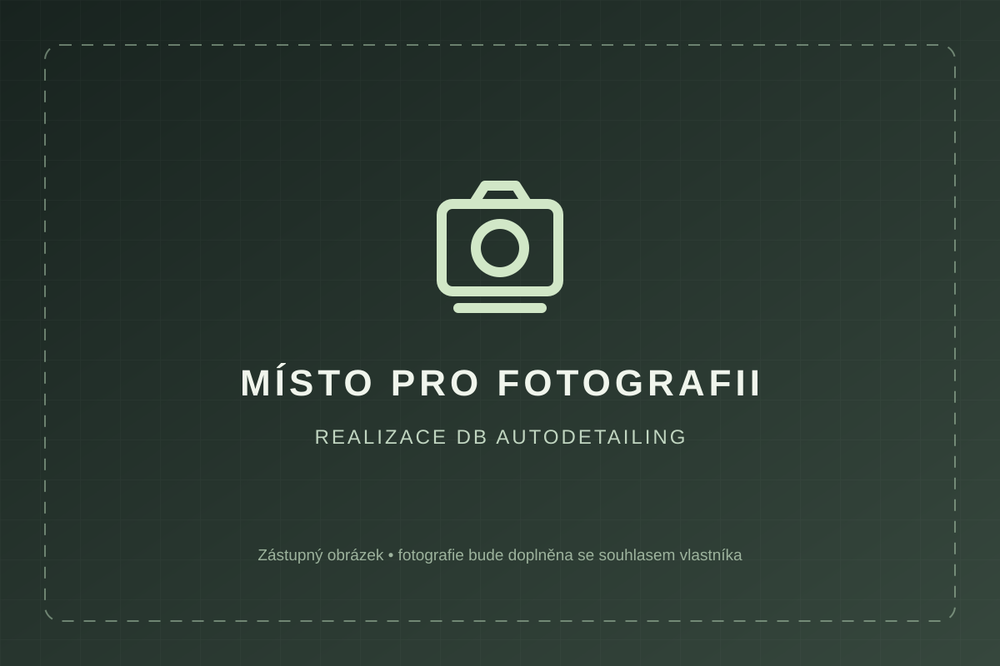

Čištění vozidel
Interiér, karoserie, kola i motor.
Čištění interiéru, leštění laku, keramická ochrana i renovace kůže. Vše přehledně na jednom místě.

SKUTEČNÉ REALIZACE · DB AUTODETAILINGInteriér, karoserie, kola i motor.
Strojní leštění, retuše a glazurování.
Certifikované povlaky NASIOL.
Čištění, barvení a opravy systémem Fenice.
Ruční mytí, dekontaminace, jednokrokové leštění, odmaštění a keramický povlak s deklarovanou životností 3 roky.
Co balíček obsahuje →Aktuální cenu a dostupnost si potvrďte při domluvě termínu.
Péče o automobily je pro nás otázkou důslednosti. Záleží nám na čistém interiéru, upraveném laku i drobnostech, které dotvářejí celkový výsledek.
Více o studiu →Na detailech záleží. Od prvního mytí až po finální kontrolu.
DŮRAZ NA VÝSLEDEKUkázky skutečných prací DB Autodetailing. Kliknutím fotografii zvětšíte.